Формальное представление естественного языка
Синтаксические процессы и ограничения
![]()
В прошлый раз
- синтаксические отношения
- сестринство
- доминирование
- с-командование
- роль с-командования для выявления правил употребления местоимений
- ограничения на возможные структуры: тета-критерий
- синтаксис нульместных, одноместных, двухместных и трёхместных глагольных групп
- структура предложения
- CP > TP > vP > VP
Сегодня
- неглагольные предикаты и тета-критерий
- ещё об адъюнкции
- синтаксические процессы: передвижение
- порядок слов
Неглагольные предикаты и тета-критерий
AP, NP, PP и AdvP как предикаты
Рассмотрим пару безглагольных предложений:
Иванов — врач.
→ предикатом является N0 врач
Иванов умён.
→ предикатом является A0 умён
Иванов в Москве.
→ предикатом является P0 в
Иванов наверху/дома.
→ предикатом является Adv0 наверху/дома
В логике первого порядка подобные структуры обычно представляются в виде формул следующего вида, где «И» — константа/постоянная величина Иванов:
врач(И)
Регулируются ли структуры такого типа тета-критерием?
Субъект в целом обязателен1
*Врач.
*Умён.
*В Москве.
*Наверху/дома.
Гипотеза
Предложения (а–d) невозможны, т.к. нарушают тета-критерий: единственная тета-роль одноместного предиката остаётся неприсвоенной.
Существуют ли двухместные неглагольные предикаты, для которых также можно было бы показать нарушение тета-критерия?
Обязательные аргументы прилагательных
Некоторые прилагательные и существительные способны принимать предложные группы в качестве дополнений:
Williams is fond [PP of painting ].
Данные PP-комплементы обязательны:
*Williams is fond.
Подобные прилагательные существуют и в русском языке.
склонный
Нам нужны склонные к компромиссам сотрудники.
*Нам нужны склонные сотрудники.
похож
Иванов похож на отца.
*Иванов похож.
Ещё об адъюнкции
Адъюнкция к X′ и XP


Возможные и невозможные структуры
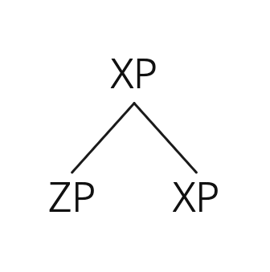
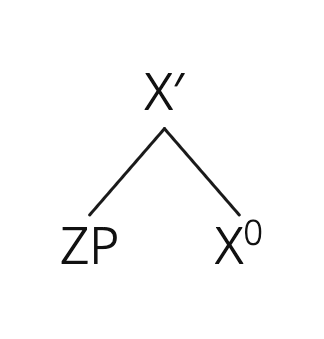
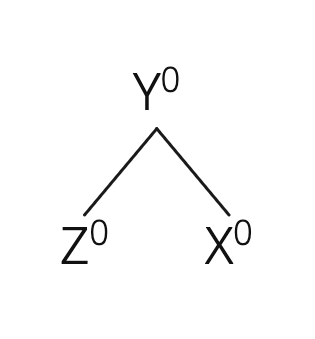
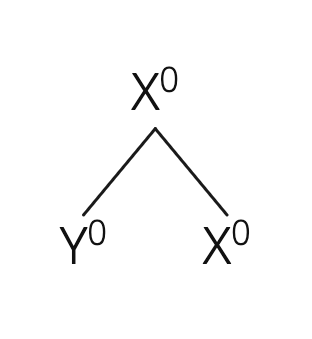
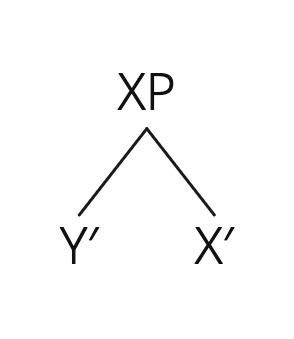
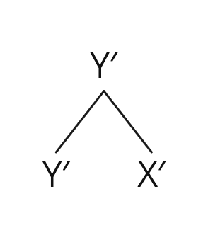
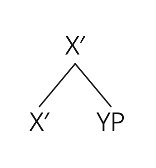
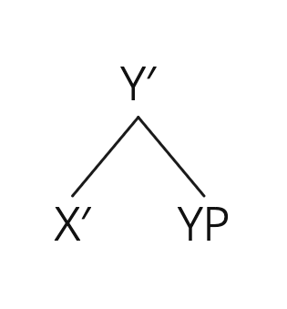
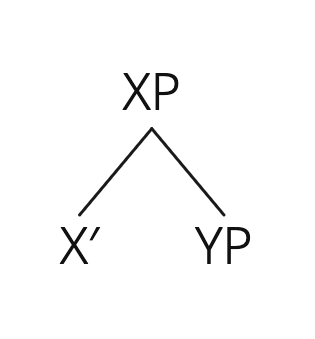
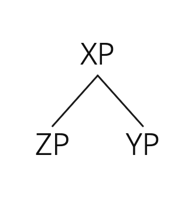
Cложные вершины
Иногда то, что мы по ряду причин хотим считать вершиной, состоит из нескольких «слов»:
- англ. in front of
- из-за
- из-под
Каждый из этих элементов по отдельности может быть вершиной.
Предположим, что вершина А может присоединяться в качестве адъюнкта к вершине B, образуя вместе с ней сложную вершину.
Например, A = заP; B = изP:

Сложный предлог из-за наследует грамматические свойства из и не наследует грамматических свойств за:
из дом-а
за дом-ом
из-за дом-а/-*ом
Сложные вершины и передвижение глагола
Вспомним, что финитный глагол в разных языках может произноситься в разных позициях:
- в v0 в русском и английском;
- в T0 в романских;
- в C0 в остальных германских.
Мы будем считать, что, передвигаясь из V0 в v0, глагол образует с v0 сложную вершину путём адъюнкции.
V0+v0 = ?


Несовпадение позиций
Иногда составляющая произносится в одной позиции, а интерпретируется в другой:
- Spec,vP → Spec,TP
- Наши гости уже все ушли.
- John seems to be reading a book.
- позиция вопросительных групп в прямых и косвенных вопросах
- What book does John seem to be reading __?
- Mary wonders what book John seems to be reading __.
К ним мы добавим пассивизацию, а также т.н. «свободный порядок слов» в русском.
Свободный порядок слов
Вчера я положил свою книгу на полку.
Я вчера положил свою книгу на полку.
На полку я вчера положил свою книгу.
Свою книгу я вчера положил на полку.
Однако
*На я полку книгу вчера положил свою.
*Свою на вчера книгу я полку положил.
→ свободным является не порядок слов, а порядок составляющих
Передвижение и X′-схема
Вспомним, что структуры, создаваемые передвижением, также соблюдают общие принципы построения словосочетаний.
Следовательно, для каждой рассмотренной «конструкции»
- нам нужна вершина, инициирующая передвижение;
- группы будут передвигаться в её спецификатор
- C[?]
- C[top]
- C[foc]
Внимание
та же логика, что при передвижении подлежащего в Spec,TP
О существовании передвижения
wanna-contraction
Сравним следующие английские предложения:
I want to help you.
I wanna help you.
Who do you want to help?
Who do you wanna help?
Who do you want to help you?
но:
*Who do you wanna help you?
След/копия подлежащего блокирует слияние:
[CP who do [TP you want [ who [TP to help you]]]]
Кстати: о бедности стимула
Местоимения и усвоение языка (Leddon & Lidz 2006)
Антецедент рефлексива находится в области ближайшего подлежащего:
Norbert remembered that Ellen painted a picture of herself.
*Norbert remembered that Ellen painted a picture of himself.
Norbert remembered that Ellen was very proud of herself.
*Norbert remembered that Ellen was very proud of himself.
Допустим, что ребёнок получает эти данные из языковой среды.
Дополнительные ограничения
Оказывается, что сформулированное ограничение недостаточно строго:
Norbert remembered which picture of herself Ellen painted.
Norbert remembered which picture of himself Ellen painted.
Norbert remembered how proud of herself Ellen was.
*Norbert remembered how proud of himself Ellen was.
Какие первичные языковые данные необходимы для усвоения данного контраста?
Leddon & Lidz (2006)
Структурно близкие предложения не встречаются в речи, направленной на детей:
- 10000 частных вопросов (wh-questions) в базе данных Child Language Data Exchange System (CHILDES)
- 0 вопросов с вопросительной группой, содержащей рефлексив/личное местоимение/имя
- аналогичный поиск в Гугле выдаёт только ссылки на лингвистические работы
→ отсутствуют данные для формулировки обобщения
Predicate-internal subject hypothesis
Все аргументы получают тета-роли низко.
Ещё раз рассмотрим интересующие нас примеры:
Norbert remembered which picture of herself Ellen painted.
Norbert remembered which picture of himself Ellen painted.
Norbert remembered how proud of herself Ellen was.
*Norbert remembered how proud of himself Ellen was.
Предположим, что, подобно глагольным группам, предикат proud of himself/herself содержит невидимую копию подлежащего:
*Norbert remembered [how Ellen proud of himself] Ellen was.
Определённое сходство с непроизносимым, но грамматически активным глаголом в [VP [NP a pound] [V′ give [PP to Michael]]]
Подробнее о передвижении
Свойства передвижения
- передвигаются только целые составляющие
- результатом передвижения являются структуры, подчиняющиеся правилам теории проекции (X′)
- передвижение происходит «вверх по дереву»
- передвижение не добавляет в структуру новых элементов
- передвижение не может пересекать границ некоторых объектов
Лингвистические «гамма-лучи»
Давайте рассмотрим одну метафору.
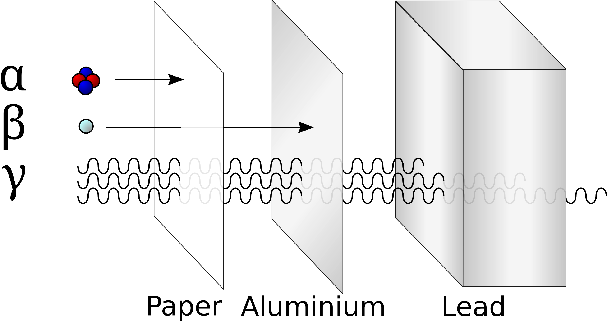
Неограниченность вопросительного выноса
Вопросительный вынос может быть локальным, т.е. происходить в пределах одного простого предложения:
He was reading a book.
What was he reading __?
Неограниченность в вопросах
Одна граница клаузы:
He said [ (that) he was reading a book].
What did he say [ (that) he was reading __ ]?
Две границы клауз:
She believes [ (that) he said [ (that) he was reading a book].
What does she believe
[ (that) he said [ (that) he was reading __ ]]?
Три границы клауз:
They are claiming [ (that) she believes [ (that) he said [ (that) he was reading a book]]].
What are they claiming [ (that) she believes
[ (that) he said [ (that) he was reading __ ]]]?
Четыре границы клауз:
I think [ (that) they are claiming [ (that) she believes
[ (that) he said [ (that) he was reading a book]]]].
What do you think [ (that) they are claiming [ (that) she believes [ (that) he said [ (that) he was reading __]]]]?
Пять границ клауз:
Everyone agrees [ (that) I think [ (that) they are claiming [ (that) she believes
[ (that) he said [ (that) he was reading a book]]]]].
What does everyone agree [ (that) you think [ (that) they are claiming [ (that) she believes [ (that) he said [ (that) he was reading __]]]]]?
Шесть границ клауз:
Everyone can hardly deny [ (that) they agree [ (that) I think [ (that) they are claiming [ (that) she believes
[ (that) he said [ (that) he was reading a book]]]]]].
What can everyone hardly deny [ (that) they agree [ (that) you think [ (that) they are claiming [ (that) she believes [ (that) he said [ (that) he was reading __]]]]]?
Вывод: не существует принципиального верхнего предела числа границ клауз, которые может пересекать вопросительный вынос
Но!
Иногда вопросы просто кажутся невозможными:
He made the claim [ that he has met Wolverine ]
*Who did he make the claim [ that he has met __]?
He mentioned the fact [ that he had run into Magneto ]
*Who did he mention the fact [ that he had run into __]?
Что особенно поразительно, учитывая полную приемлемость следующего:
Who did he claim [ that he has met __ ]?
Who did he mention [ that he had run into __]?
Что здесь происходит?
Синтаксические острова
Виды островов
Термин впервые употреблён в диссертации Ross (1967):
- конфигурации, из которых невозможно осуществить синтаксическое передвижение
- сильные и слабые острова
Сильные острова
Ограничение сложной именной группы
Я видел соседей [которые купили машину]
*Машину я видел соседей [которые купили машину]
(вынос невозможен)
Ограничение сочинённой структуры
Они купили [дачу и машину]
*Машину они купили [дачу и машину]
Но:
Дачу они купили [дачу и машину]
почему так можно?
Ограничение сложной именной группы
Сложная именная группа — именная группа, осложнённая собственным зависимым предложением — придаточным относительным либо аргументным.
утверждение, которое преподаватель старательно формулировал
утверждение, что человек произошёл от обезьяны
Разберёмся, как это работает.